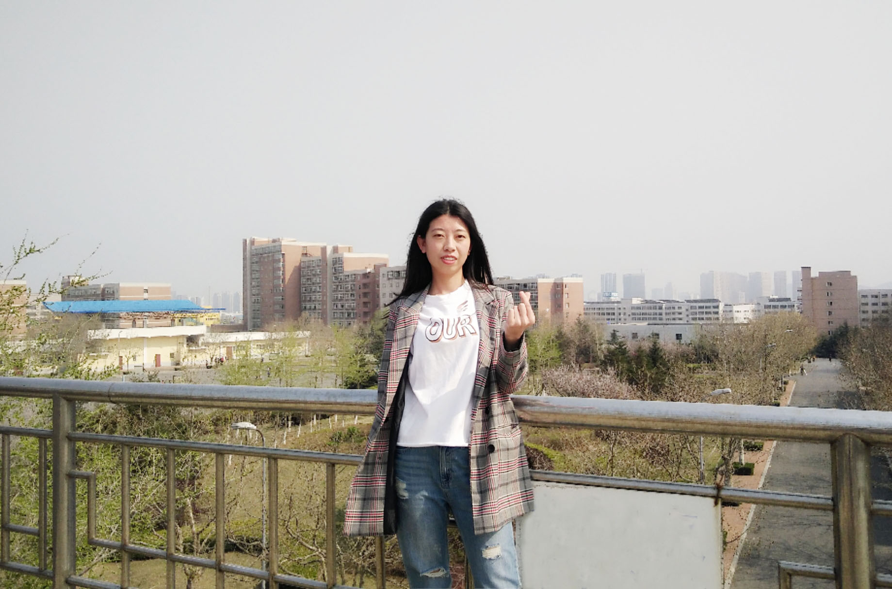
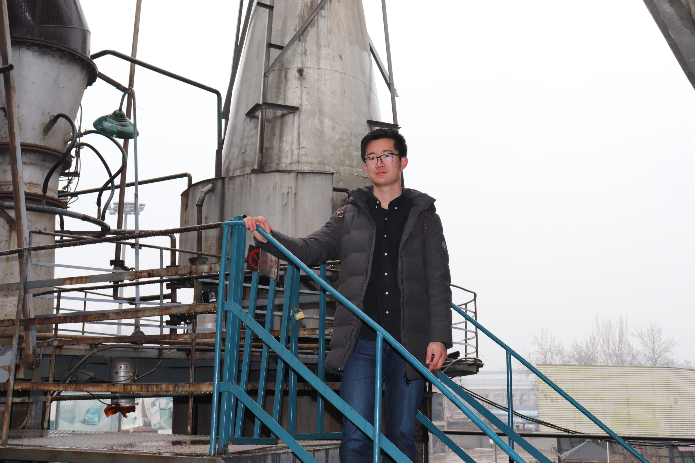
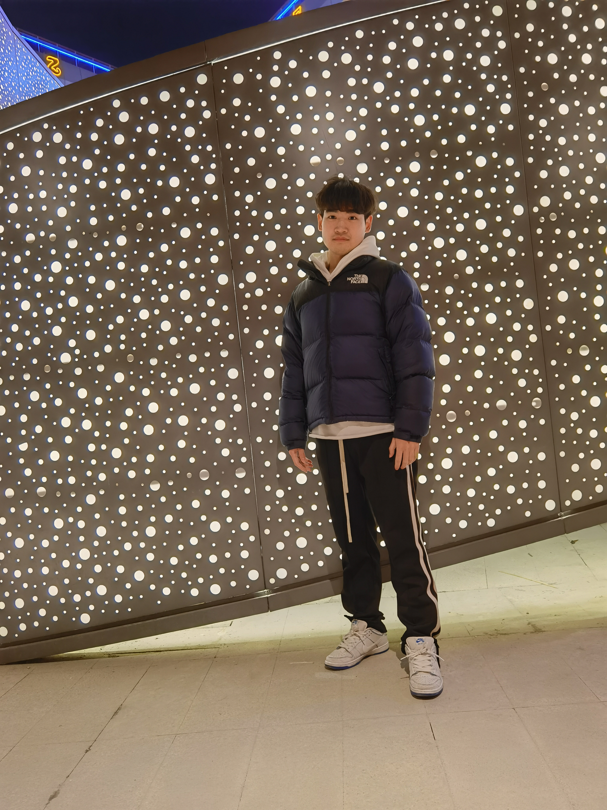
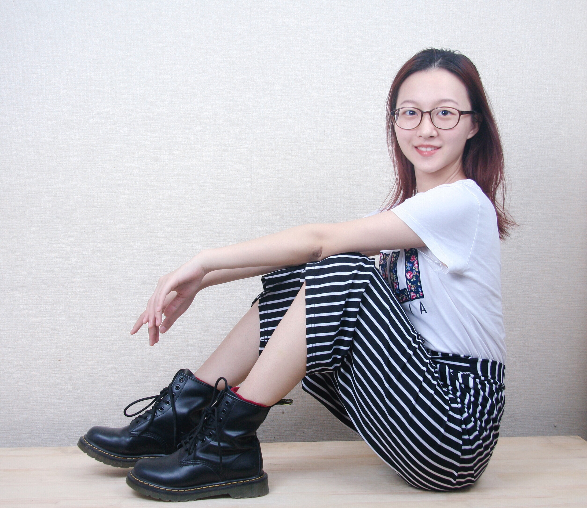
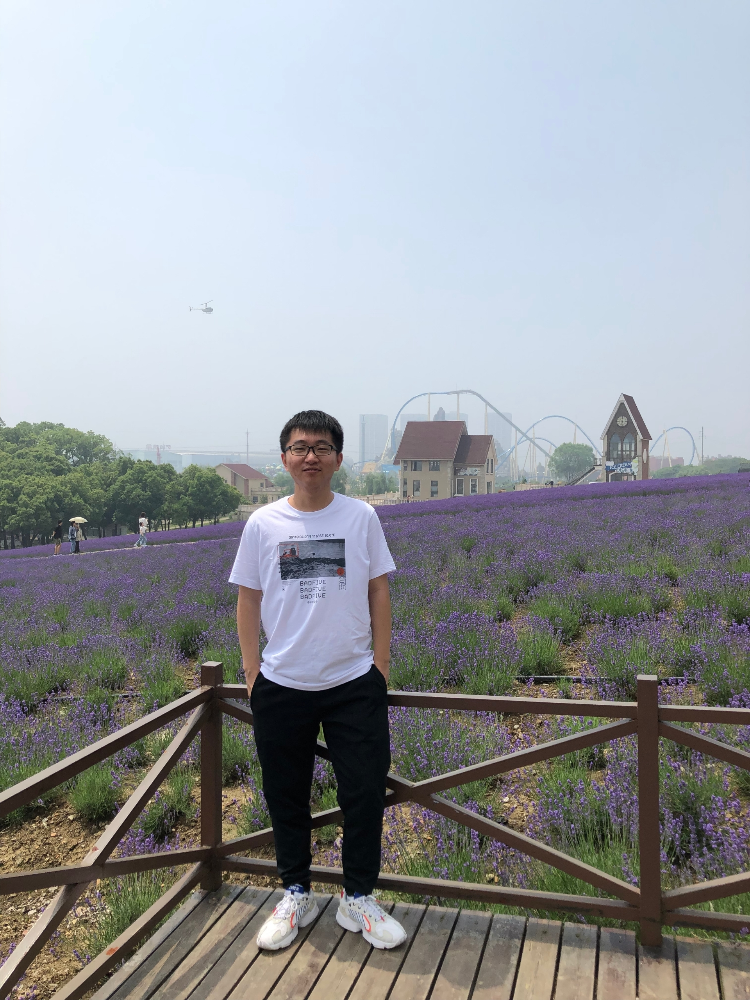
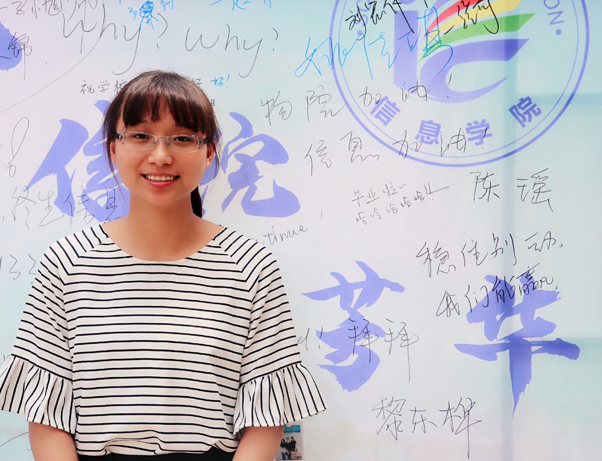
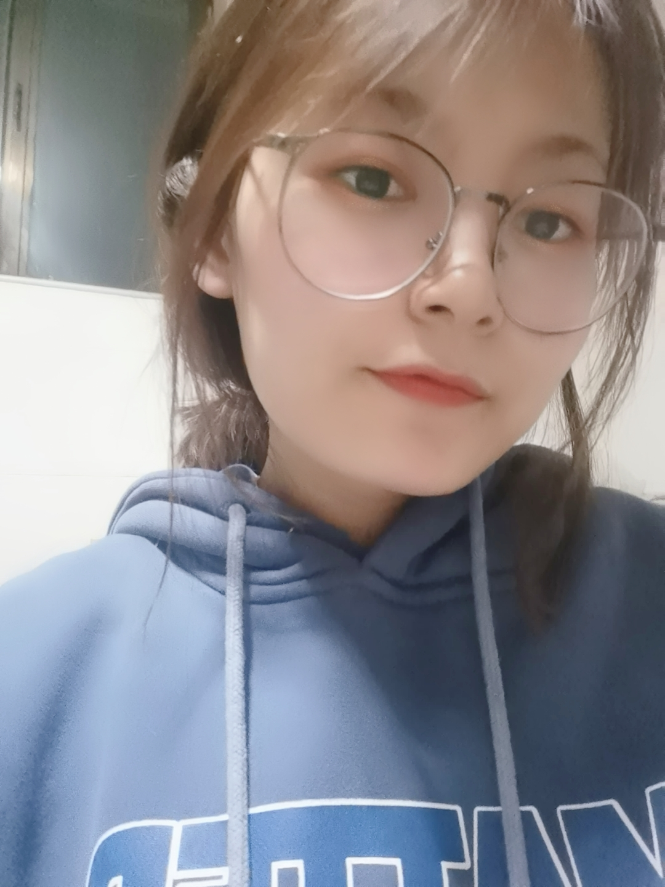

靳军，女，博士毕业于北京理工大学计算机应用技术专业，中国计算机学会（CCF）会员。物联网与区块链技术实验室骨干教师。研究方向为区块链技术、智能物流、服务计算。作为核心人员参与多项科研项目，包括国家重点研发项目、北京市社科基金等重要课题，发表学术论文20余篇，发明专利及软著近20项，荣获省部级奖项2项。曾在首发集团从事科研及工程工作6年，具备丰富的科研和工程实践经验。

于真，副教授，2010年1月毕业于北京科技大学，获计算机应用技术专业工学博士学位。2010年至今在北京物资学院学院信息学院计算机技术与物联网工作系从事教学和科研工作。现为物联网与区块链技术实验室骨干教师。主持或参与国家自然科学基金1项，市局级以上科研项目5项，发表论文30余篇，第一作者论文16篇。研究领域为对等网络信任，区块链技术、电子商务信任，网络信息安全等。

李洁，北航计算机博士，助理研究员，中国计算机学会（CCF）会员。研究方向为区块链、形式化验证、隐私计算等。2012年以来一直在北京物资学院信息学院工作，物联网与区块链技术实验室重要成员。具有丰富的项目组织以及技术开发经验，参与国家级、省部级等纵向课题12项，横向课题11项。发表学术论文近20篇，荣获协会奖项2个，授权国家发明专利7项，计算机软件著作权9项。
可信边缘计算:
曹婷婷，女，陕西榆林人， 2018级物流工程专业硕士生，主要研究方向和关注的领域是区块链技术、智能物流溯源系统。可信边缘计算组组员。在校期间我认真学习，积极跟随导师做课题，多次参与重点课题调研以及项目报告撰写工作等。参与并成功授权国家发明专利2项，计算机软件著作权4项，发表学术论文1篇。
在实验室这个大家庭中学习与成长，使我学会了做任何事情都要有认真、严谨的态度和不懈努力的精神，掌握了编程、写作文章能力，同时，也收获了老师们的悉心教导、师弟师妹们的暖心帮助，让我的研究生生活充实且丰富。
座右铭：没有命中注定的结局，只有不够努力的过程。

冯子宝，江苏宿迁人，18级计算机软件与理论专业的硕士研究生。可信边缘计算组组员，目前研究方向是智能合约服务组合架构。
加盟IBT的两年内，了解了区块链基本知识，积极参加实验室的科研，参与实验室实际课题。在团队学习中，增强了团队协作意识，明白与人交流和沟通的重要性。同时在实验室里，提高了自己动手能力；在思考问题时，需要全面、仔细；做事有自己明确的想法和计划；需要快速适应不同的环境。在IBT里的经验让我可以学以致用，这让我有很大成就感与幸福感，这些宝贵的经验为未来的自我发展有着重要的意义，作为IBT一员，为实验室贡献自己的一份力量是荣幸的。
座右铭以及寄语：我始终相信“奋斗令我们的生活充满生机，责任让我们的生命充满意义，常遇困境说明你在进步，常有压力，说明你有目标”我们只有不断的丰富自己才不会令自己后悔。

师灵芝，女，陕西西安人，20级计算机应用技术专业在读硕士研究生。可信边缘计算小组组长。研究方向为区块链、物联网、移动智能边缘计算。本科阶段参与过实验室的大创项目，并取得校级二等奖的优异成绩。目前参与重点研发、自然基金申请等工作。授权1项国家发明专利和荣获1项计算机软件著作权。爱好跑吧。
从大三开始进入实验，并且第一志愿报考本校，又继续在实验室读研。到现在已经两年多的时间了，在这个团队中我积累了开发经验、学会了独立思考，更重要的是遇到了几位科研路上的启蒙导师、结交了一群志同道合的伙伴，让充满挑战的研究生阶段不再孤独、不再迷茫。
我的座右铭是：一场改变自己的劳作重要的不是我们将自己变成了什么，而是我们在改变自己时都做了什么。
可信隐私计算:

刘欣，女，河北沧州人，19级计算机科学与技术在读本科生。可信隐私计算小组组员。对新兴技术和事物有浓厚兴趣，喜欢桌球，有一定的自我学习能力，吃苦耐劳，热爱运动。研究方向为区块链、智能合约以及访问控制技术。曾参与1次大学生科学研究与创业行动计划项目并成功结项。目前正在参与大创深化项目。参与撰写计算机软件著作权1篇，积极配合实验室科研项目。
2019年入学第一周便进入实验室，等于在紧张的高中生活结束后，直接进入科研+学习的生活状态，是一种幸运，也感觉是一种挑战。在实验室一年多的时间里，在专业上有了卓越的成长，目前已熟练Android开发，Python绘图与可视化，掌握Java，solidity等多种语言，对专业的兴趣越来越浓。在这个有着20多名师兄师姐，师弟师妹以及多名老师的大家庭里受到了潜移默化的影响，无论是学习态度还是为人处事方面。我在各位老师以及师兄师姐们的指导与帮助下，不断提升专业知识，学会合作中独立，独立中合作。
座右铭以及寄语：“也许后续还有一个个难关，但勇敢走出第一步很重要，突破自我，不断成长”，希望实验室的大家都关关难过关关过，前路漫漫亦灿灿。

沈薇，女，江苏宿迁人，17级计算机科学与技术在读本科生。可信隐私计算组组员。爱好：绘画，写作。多次荣获专业排名第一名，是典型的“学霸”。研究方向为同态加密与区块链技术。参与多项横纵向研究课题，发表核心期刊论文2篇，计算机软件著作权2项，授权发明专利1项。参与两项大创项目，荣获1次校优秀大创项目一等奖，1次北京市大创深化项目推优。目前正在参与北京市毕业设计实培项目。
从大一就加入实验室，是团队最早的成员之一。在实验室的团队中学习与成长，一方面提高了科研能力和专业技能，避免把自己局限于课本知识上，动手能力得到增强；另一方面养成了团队合作的意识、不屈不挠的精神，提高了自信心和责任心，锻炼了语言表达能力，受益匪浅。
座右铭以及寄语：“有志者事竟成。”人生要有目标，自己去拼搏、去奋斗，在风雨中百折不挠、勇往直前。

田明宇，女，河南安阳人，20级计算机应用技术在读硕士研究生。爱好听音乐、看电影、看书等。可信隐私计算小组组员，研究方向为区块链与隐私计算。参与开发交科院和张家口项目等课题。通过实践项目能够明确意识到自己的不足，并找到努力的方向及目标。
实验室是个团结向上，真诚友爱的大家庭，同时也是夜以继日，埋头苦干的好去处。科研生活中除却培养了我的独立性之外，也大大提高了我的执行力。
座右铭以及寄语：愿自己的研究生生活以渺小启程，以伟大结束。
王晨硕，北京人，可信隐私计算组成员。2017级计算机科学与技术专业的本科生。爱好篮球、跑步、看电影。从大一就加入IBT实验室，是最早的成员之一，见证了实验室成立和发展。主要开展区块链技术的学习和探索，对区块链技术和以太坊开源系统较为熟悉。期间参与了两次大创深化项目，均获得了项目推优。还参与了企业的横向课题，交科院的开放课题等一些项目，承担了重要角色。目前正在参与北京市毕业设计实培项目。发表SCI论文1篇，计算机软件著作权2项。
作为实验室早期的成员，见证了实验室从无到有的壮大，感受到了实验室团队的温暖，实力的增强。作为本科生在团队中，培养了独立思考和动手开发的能力，提高了对计算机专业知识深度和广度的积累。
座右铭：易卜生曾说过“伟大的事业，需要决心，能力，组织和责任感”。
寄语：知识好比浩浩荡荡、奔流不息的江河，它是由无数涓涓小流汇成的，它有源头，却没有终点。
钟琼慧，女，湖南邵阳人，19级物联网工程与技术在读硕士研究生。可信隐私计算小组组长。研究方向为区块链、隐私计算以及物联网技术等。参与多项科研项目的申请、实施和研发工作，并发表学术论文3篇，计算机软件著作权5项，并积极申报国家发明专利。 从本科开始就进入了实验室，目前已经2年多了，逐步融入了这个温暖的大家庭，最大的收获是对自己性格方面、处事方面的历练，培养了自己的独立性和责任心，同时在学习和实践中锻炼了实际操作和解决问题的能力。 座右铭：书山有路勤为径，学海无崖苦作舟。寄语：希望自己越来越好！
可信智能网络：
岑搏文，男，湖北黄冈人，19级计算机科学与技术在读本科生。研究方向为区块链共识协议和卫星传输协议。可信智能网络组组员。参与多项科研项目的申请，实施，研发工作。爱好：辩论、高尔夫、跆拳道、弹吉他、篮球、羽毛球、马拉松、做饭、健身。
从大一开始就进入了实验室，从实验室中接触到了很多人，从中认识到很多朋友，也参与很多团体科研项目，从中慢慢的学会了团队合作。在专业的学习和实践中，也对自己对未来这个行业的需求有了更深一步的体验，明确自己的目标。
座右铭：人惟患无志，有志无有不成者
吕天一，女，辽宁辽阳人，19级计算机科学与技术专业本科生。可信智能网络组组员，研究方向为区块链和信息技术。。参加了1次大创项目并成功结项，目前正在参与大创深化项目的开发工作。爱好滑雪、插花、网球、排球、健身。
从大一开始就进入了实验室这个温暖的大家庭，实验室充分培养和提高了我的团队合作精神，并且给予了充分的实践机会。使我可以在实践中提高科研能力和综合素质。并且在为了理想奋斗的路上，找到了一群志同道合的人相伴。
座右铭以及寄语：积极的人在每一次忧患中都看到一个机会，而消极的人则在每个机会都看到某种忧患。
谈金晶，女，安徽合肥人，18级计算机科学与技术专业在读本科生。爱好：英文、辩论。曾任辩论会领队，为“南有嘉木杯”亚军队伍。英语通过六级考试。研究方向为区块链技术和智能合约。参与可视化智能合约工具的开发，以及2018和2019年的大学生创新训练项目，并取得1次大创深化项目推优。发表学术论文1篇，计算机软著2项。
从大二开始加入实验室，目前已有一年多了，最大的收获是提前接触到科研的思想，以及做学术应有的态度和技能，培养了自己独立思考以及团队合作的能力，同时认识了很多厉害的师兄师姐，在温暖的氛围中逐步成长。
座右铭及寄语：怕什么真理无穷，进一寸有进一寸的欢喜。

徐梦坤，男，来自河南省周口市，20级计算机应用技术在读硕士研究生。可信智能网络组成员。爱好：足球、羽毛球、看书、动漫。
进入实验室半年，从一个普通的计算机专业的学生，到逐渐地知道如何去培养科研与研究的思维。不论是技术方面还是在科研方面，在实验室的大家庭中都得到了锻炼和提升。大家互相帮助，讨论科研问题，思想火花碰撞，知识面得到扩展。
相信在团队中，在今后的科研生活中会有更大的更多的收获。“科研这条路上，天才也需要勤奋，坚信勤奋是成功的敲门砖”。

闫乐，男，山东济宁人，可信智能网络小组组长。20级物联网工程与技术专业硕士，主要研究方向：智能网络、卫星区块链网络、区块链技术等。
目前在实验室从事卫星区块链网络相关研究工作，参加多项实验室课题项目、基金。进入实验室以来，积极参加实验室各种工作以及学术交流会议，自己的知识面以及各项能力等到快速的提升。在学习生活上，被课题组浓厚的学术氛围所感染，师生关系融洽，同门师兄弟互帮互助。
我始终坚信“世上无难事，只要肯登攀”，只要自己不被困难吓倒并且坚持不懈，一定能不断成长进步。
曹昕宇，男，江苏无锡人，19级物流工程专业在读研究生，研究方向是区块链与物流供应链管理。区块链与智能合约组组员。参与了实验室多项横纵向科研项目及课题，协助导师和同学处理实验室管理方面的工作，进一步明确和细化管理方面的重点。在科研方面，将课上理论与课下实践相结合的，积极参加各种学术交流会议，力争“德智体美劳”全面发展。
首先爱好国际政治与历史，要做到牢记历史，展望未来；其次闲暇之余经常了解国内外政策大事，主动学习目前物流行业发展现状；最后祖国那么大，希望能够闲暇之余去旅游，去感受华夏文明多所带给我们宝贵精神财富；
在实验室学习生涯中，实验室的学习科研方式能够很好提升自我团队合作的能力，为以后的职业生涯打下坚实的基础。其次与老师和同学们的探讨能够很好提升自我逻辑能力和反应能力，积极扩展了科研思维和交流能力，不断提高自我思考的创新性和独立性。通过参加学术沙龙、团队项目，进一步凝练了大家共识，增加了同学们之间的友谊。“金字塔”式的管理模式，以科研方向为主、小组为辅进行交流互动，使得小组之间的同学能够更加激发科研兴趣，同时跨小组的交流也能取长补短，从而在科研上遇到困难时获得灵感。
座右铭:“只争朝夕，不负韶华”。
华芳，浙江衢州人，18级物流工程在读硕士研究生，区块链及智能合约小组组员。研究方向为智能物流系统及区块链跨链技术。研究生期间主要参与了多项课题，授权了3项发明专利，获得6项计算机软件著作权，发表学术论文1篇，并获得了2020年研究生国家奖学金。
作为实验室最早的硕士之一，伴随实验室功共同成长。在课题组的两年多时间，面对问题时的心态、表达能力以及工程实践能力都得到了充分锻炼。在课题组除了能力方面得到锻炼，还收获了很多小伙伴。
座右铭及寄语：通往梦想的道路定会布满荆棘，但是只要坚持并奋力前行，定能有所收获。 
马宁，女，内蒙古自治区巴彦淖尔市人，20级计算机应用技术专业硕士在读。区块链及智能合约小组组长，主要研究方向和关注领域为区块链技术及智能合约工程。爱好：看书、滑板。
本科期间就加入实验室，参与大创项目并担任项目组长，带领组员讨论并设计项目的实现细节，最终成功结项。随后，在该项目的基础上进行延伸，设计并完成了毕业论文，最终获得了北京市优秀毕业论文的殊荣。研究生继续在实验室深造，期间参与了多项科研项目，并积极参与软著的编写及专利的申报，获得计算机软件著作权2项。同时积极参与了各种学术交流会议以扩展自己的知识面。在学习和实践的过程中，我不仅提高了自己在思考、总结、合作、组织等各方面的能力，还收获了德才兼备的老师和志趣相投的小伙伴。
座右铭：“有志者，事竟成”。

孙伽宁，女，生于黑龙江省佳木斯市，17级计算机科学与技术在读本科生。区块链及智能合约小组成员。学习成绩优秀。通过六级考试。特长：美工，是实验室“美工之星”。研究方向主要为区块链、智能合约。参加北京市大创深化项目2项，均取得推优的成绩。目前正在参与北京市毕业设计实培项目。还参与交科院项目等课题。获得计算机软件著作权4项、授权国家发明专利2项，并积极参与学术论文编写。
从大一时期就加入实验室，是实验室老队员。在这个温暖有爱的团队中收获颇多，既培养了自身对于科研的热情，同时在与项目组合作过程，磨练了自身的性格，增强了团队意识及责任心。从一个相对比较孩子气的小朋友，转变为一个有思考，更加稳重的大学生。我的成长是和IBT密切相关的。
座右铭及寄语：任何的限制，是从自己内心开始的，不要等待机会，而要创造机会，相信一切都是最好的安排。